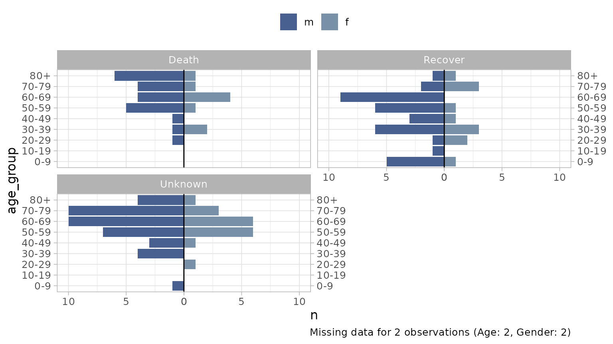

The plot_pyramid function can be used for plotting age
pyramids split by gender. It is designed to work with un-aggregated
data, i.e. patient level linelist data.
We’ll use the influenza A H7N9 dataset from the {outbreaks}
package for our examples.
library(dplyr)
library(ggplot2)
library(outbreaks)
library(epivis)
# set a ggplot2 theme of your preference
theme_set(theme_light(base_size = 12))
df_flu <- as_tibble(outbreaks::fluH7N9_china_2013)
glimpse(df_flu)
#> Rows: 136
#> Columns: 8
#> $ case_id <fct> 1, 2, 3, 4, 5, 6, 7, 8, 9, 10, 11, 12, 13, 14,…
#> $ date_of_onset <date> 2013-02-19, 2013-02-27, 2013-03-09, 2013-03-1…
#> $ date_of_hospitalisation <date> NA, 2013-03-03, 2013-03-19, 2013-03-27, 2013-…
#> $ date_of_outcome <date> 2013-03-04, 2013-03-10, 2013-04-09, NA, 2013-…
#> $ outcome <fct> Death, Death, Death, NA, Recover, Death, Death…
#> $ gender <fct> m, m, f, f, f, f, m, m, m, m, m, f, f, m, f, m…
#> $ age <fct> 87, 27, 35, 45, 48, 32, 83, 38, 67, 48, 64, 52…
#> $ province <fct> Shanghai, Shanghai, Anhui, Jiangsu, Jiangsu, J…We can see the data has both an age and gender column, with the
‘levels’ of the latter being "m" and "f" for male or
female.
To plot the pyramid chart we must supply the age and gender column to
the plot_pyramid function along with the 2 levels of the
gender column that represent male and female:
plot_pyramid(
df = df_flu,
age_col = age,
gender_col = gender,
gender_levels = c("m", "f")
)A note on missing data: by default a caption will be
added detailing any missing data not represented on the plot. You can
remove this with add_missing_cap = FALSE. Missing data is
any age that cannot be parsed as a number (including NAs) and/or any
gender that does not match a binary level provided (including NAs).
Modifying the output
Age binning
If make_age_groups = TRUE (default) the age variable
will be forced into numeric format (if not already) and then binned into
age groups. Change the age breaks with the age_breaks
argument:
plot_pyramid(
df = df_flu,
age_col = age,
gender_col = gender,
gender_levels = c("m", "f"),
age_breaks = c(seq(0, 100, 5), Inf) # 5 year intervals to 100 then 100+
)Age group labels are formatted by default with
epivis::label_breaks(age_breaks) but you can supply your
own labels if required via the age_labels argument (labels
must be same length as breaks).
Notice all age groups appear on the plot by default, whether there
are any observations of this group or not. To remove groups with no
observations use drop_age_levels = TRUE.
If you have data that has already been binned by age and you want to
use these bins, you can pass this column and set
make_age_groups = FALSE.
Facetting
You can facet the graphic by supplying a facet_col:
df_flu %>%
mutate(outcome = forcats::fct_explicit_na(outcome, "Unknown")) %>%
plot_pyramid(
age_col = age,
gender_col = gender,
facet_col = outcome, # facet by patient outcome
facet_ncol = 2,
gender_levels = c("m", "f")
)
Labelling
There are arguments to format axis and legend labels, as well as add data labels to the plot:
plot_pyramid(
df = df_flu,
age_col = age,
gender_col = gender,
gender_levels = c("m", "f"),
gender_labs = c("Hommes", "Femmes"), # must respect the same order as the breaks
x_lab = "Tranche d'Âge",
y_lab = "Nombre de Personnes",
show_data_labs = TRUE,
add_missing_cap = FALSE # remove caption detailing missing data
)Notice smaller value labels are places outside the bar to improve
legibility. You can change the threshold for moving a label with
lab_nudge_factor. The default value is 5. Increasing the
number increases the distance from the max value required to move a
label outside the bar. So if you want to keep all labels inside the
bars, increase to a higher value:
plot_pyramid(
df = df_flu,
age_col = age,
gender_col = gender,
gender_levels = c("m", "f"),
gender_labs = c("Hommes", "Femmes"), # must respect the same order as the breaks
x_lab = "Tranche d'Âge",
y_lab = "Nombre de Personnes",
show_data_labs = TRUE,
lab_nudge_factor = 50 # change from 5 to 50
)Theming
Although plot_pyramid has built-in theme defaults,
because the function returns a ggplot object, you can easily reset any
default by adding your own themes, palettes etc to the object:
plot_pyramid(
df = df_flu,
age_col = age,
gender_col = gender,
gender_levels = c("m", "f"),
gender_labs = c("Hommes", "Femmes"), # must respect the same order as the breaks
colours = c("darkcyan", "firebrick"), # change bar colours
x_lab = "Tranche d'Âge",
y_lab = "Nombre de Personnes",
show_data_labs = TRUE,
lab_nudge_factor = 20,
lab_out_col = "white"
) +
hrbrthemes::theme_ft_rc() +
labs(title = "Add a title", subtitle = "and a subtitle") +
theme(
legend.position = "top",
axis.text.x = element_blank(),
axis.title.x = element_text(hjust = .5),
axis.title.y = element_text(hjust = .5)
)